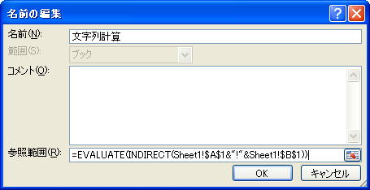

文字列でのセル参照と文字列の計算式について（Evaluate,INDIRECT）
セルまたはセル範囲を表す文字列からセル参照する場合と、文字列としての計算式から計算する場合です。
A1に、"Sheet2"
B1に、"A1"
A1に、"(2+3)*2"
"Sheet1"のC1に、"Sheet2"のA1の内容つまり"(2+3)*2"を表示する場合です。
ワークシート関数のINDIRECT関数です。
C1に、"=INDIRECT(A1&"!"&B1)"
INDIRECT関数と、ほぼ同様機能として、
この説明はヘルプです、全く理解できない日本語です。（笑
名前はなんでも良いので、仮に、"文字列計算"とします。
参照範囲に、"=EVALUATE(INDIRECT(Sheet1!$A$1&"!"&Sheet1!$B$1))"

C1セルに、"=文字列計算"
これで、答えの10がC3セルに表示されます。
このように出来ないこともないのですが、
↓
Range("SHeet2!A1") → "(2+3)*2"
↓
Evaluate("(2+3)*2") → 10
同じテーマ「マクロVBA技術解説」の記事
ExecuteExcel4Macroについて
再帰呼出しについて（再帰プロシージャー）
フィボナッチ数列（再帰呼び出し）
文字列でのセル参照と文字列の計算式について（Evaluate,INDIRECT）
リボンを非表示、2003以前ならメニューを非表示
印刷ページ設定の余白をセンチで指定する（CentimetersToPoints）
文字列としてのプロシージャー名を起動する方法（Run,OnTime）
ドキュメントの作成者を取得（GetObject,BuiltinDocumentProperties）
画像サイズ（横x縦）の取得について
文字種（ひらがな、全半角カタカナ、半角英大文字等々）の判定
オブジェクトとプロパティの真実
新着記事NEW ・・・新着記事一覧を見る
VBA100本ノック 100本目：WEBから100本ノックのリストを取得｜VBA練習問題（3月3日）
VBA100本ノック 99本目：自動席替え（行列と前後左右が全て違うように）｜VBA練習問題（3月2日）
VBA100本ノック 98本目：席替えルールが守られているか確認｜VBA練習問題（3月1日）
VBA100本ノック 97本目：Accessデータを取得（グループ集計）｜VBA練習問題（2月27日）
VBA100本ノック 96本目：Accessデータを取得（マスタ結合&抽出）｜VBA練習問題（2月26日）
VBA100本ノック 95本目：図形のテキストを検索するフォーム作成｜VBA練習問題（2月24日）
VBA100本ノック 94本目：表範囲からHTMLのtableタグを作成｜VBA練習問題（2月23日）
VBA100本ノック 93本目：複数ブックを連結して再分割｜VBA練習問題（2月22日）
VBA100本ノック 92本目：セルの色を16進で返す関数｜VBA練習問題（2月20日）
VBA100本ノック 91本目：時間計算（残業時間の月間合計）｜VBA練習問題（2月19日）
アクセスランキング ・・・ ランキング一覧を見る
1.最終行の取得（End,Rows.Count）｜VBA入門
2.RangeとCellsの使い方｜VBA入門
3.変数宣言のDimとデータ型｜VBA入門
4.マクロって何？VBAって何？｜VBA入門
5.Range以外の指定方法（Cells,Rows,Columns）｜VBA入門
6.セルのコピー&値の貼り付け（PasteSpecial）｜VBA入門
7.繰り返し処理（For Next)｜VBA入門
8.セルに文字を入れるとは（Range,Value）｜VBA入門
9.マクロはどこに書くの（VBEの起動）｜VBA入門
10.とにかく書いてみよう（Sub,End Sub）｜VBA入門
- ホーム
- マクロVBA応用編
- マクロVBA技術解説
- 文字列でのセル参照と文字列の計算式について（Evaluate,INDIRECT）
このサイトがお役に立ちましたら「シェア」「Bookmark」をお願いいたします。
記述には細心の注意をしたつもりですが、
間違いやご指摘がありましたら、「お問い合わせ」からお知らせいただけると幸いです。
掲載のVBAコードは動作を保証するものではなく、あくまでVBA学習のサンプルとして掲載しています。
掲載のVBAコードは自己責任でご使用ください。万一データ破損等の損害が発生しても責任は負いません。